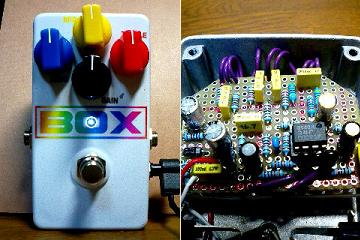
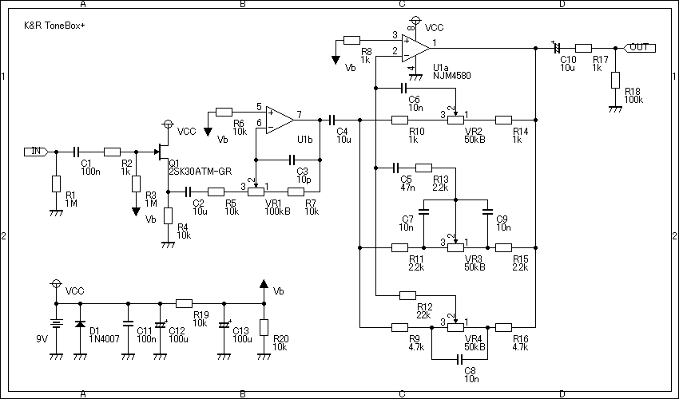
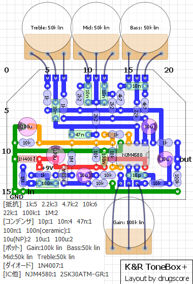
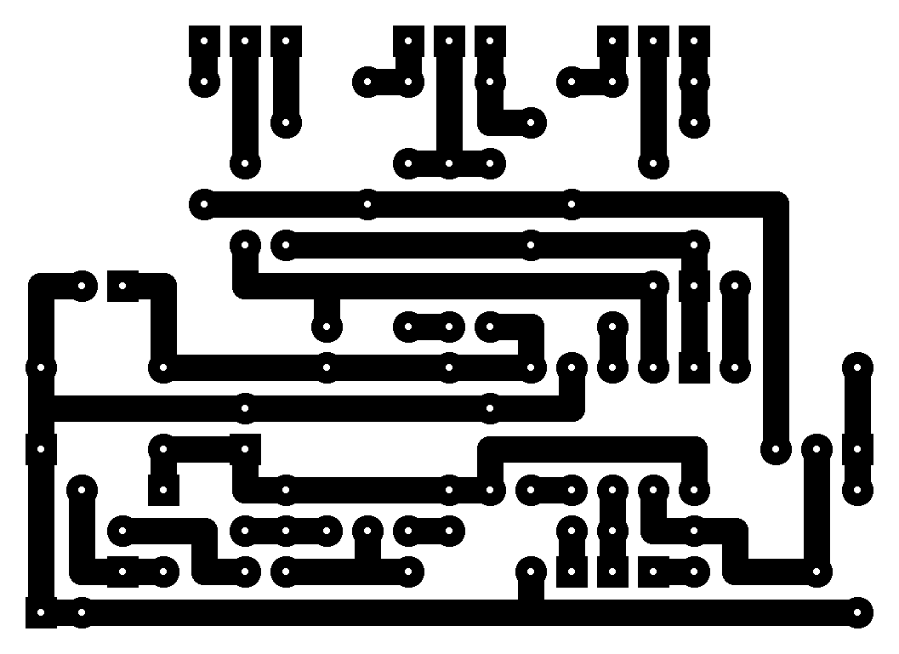

ひよこのページ Tone Box改
2009年04月21日 カテゴリー：自作エフェクター（アナログ）

なんとなくミッドブースターが欲しいななんて思っていたんですが、どうせならトレブルブースターも…なんて考えてるうちにたどり着いたのがひよこのページのトーンボックスです。このエフェクターは音色の変更（シングルコイルをハムバッカー風に等）もできるので、音量調節も欲しいと思いゲインポットも加えてみました。
▽回路図

ゲインは真ん中で原音と同じ音量になります。BASS、MID、TREBLEで調節する周波数は元のままで変えていません。
▽レイアウト

▽PCB（横55.9mm縦40.6mm）

配線をしやすいようにしてみました。フルレンジブースターとして使うこともできます。いろんな使い方ができてとても便利です。
塗装の途中で塗料が切れてしまって極薄塗装になってしまいました。すでにGAINの横が剥がれてきてます。やっぱりちょっと値段が上がっても塗装済みのケースがいいですね。